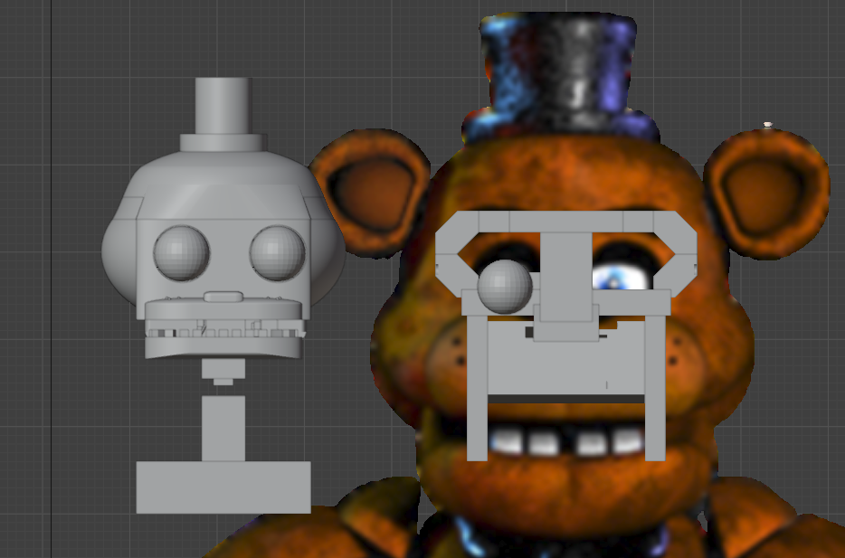

FRED-01 is an animatronic made by me, and is based on Freddy Fazbear from the video game called Five Nights at Freddy's.
All parts of MB-FRED-01 were made in Blender, the specific version isn't available as I am always on the latest version of Blender on Steam.
Currently, I am completely redesigning FRED-01 because prototype 1 was mainly just a proof of concept, prototype 2 improves on prototype 1 and makes it an actually good animatronic.
Below are images of the first prototype of FRED-01.


Below is an image comparing prototype 1 (left) to prototype 2 (right).
Q&A/FAQ
What does FRED-01 stand for?
The FRED part is a cut down version of "Freddy" because FRED-01 is based off of Freddy Fazbear, and 01 is the first version of the robot(not including prototype versions).
Have a question about FRED-01 you want answered? Put it here and I'll make sure to answer it!